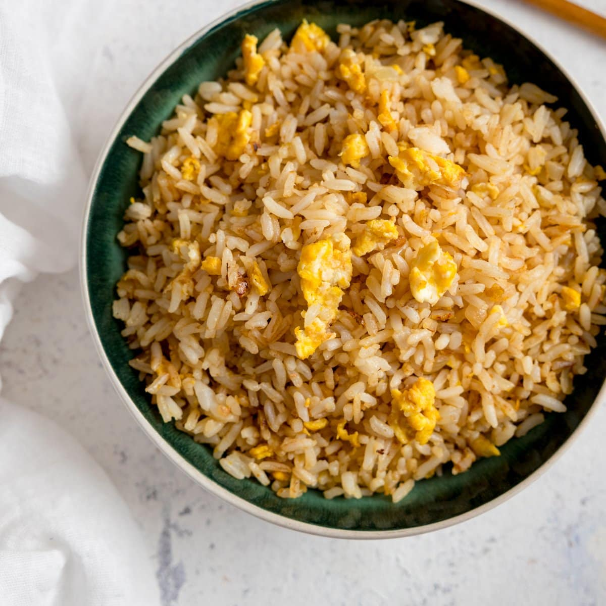

Recipe Collection
EGG FRIED RICE

Ingredients:
- 250g long grain rice
- 3 tbsp vegetable oil
- 1 onion, finely chopped
- 4 eggs, beaten
- 2 spring onions, sliced, to serve
Steps:
- Cook the rice following pack instructions, then drain, spread it out to steam-dry and set aside.
- Heat 2 tbsp of the oil in a large wok over a high heat, then add the onion and fry until lightly browned, around 5 mins. Add the rice, stir and toast for about 3 mins, then move to the side of the pan.
- Add the remaining oil, then tip in the egg mixture. Leave to cook a little, then mix in with the rice – stir vigorously to coat the grains or, if you prefer the egg chunkier, allow to set for a little longer before breaking up and stirring through. Tip into a serving bowl and scatter over the spring onion to serve. You can also add sesame oil, ground white pepper and a splash of soy sauce to season.
BREAD OMELETTE
Ingredients:
- 2 egg
- 4 slices brown bread
- 1 tablespoon butter
- Salt as required
Steps:
- To prepare this easy recipe, take the bread slices and remove the centre with the help of a bowl. Now take another bowl and beat eggs in it using an electric beater. After beating the eggs, add green chillies, onion, coriander leaves and salt to the eggs, whisk well.
- Now, put a non-stick pan over medium flame. Place the centre chopped bread in the pan and put half of the egg mixture in the centre of the bread. Then, cover it with another bread slice. Cook for 1-2 minutes on one side and then flip to cook the other side as well for 2 minutes. Repeat the step to use the leftover mixture and bread. Once done, serve hot and crisp with butter on the top.